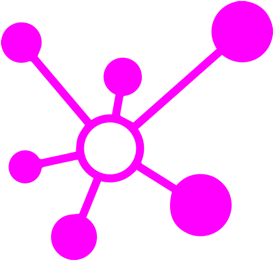

<!-- *************************************************** Barre de navigation ************************************************************************* -->
<div id="navbarStyle" class="sticky-top">
    <nav class="navbar navbar-expand-lg navbar-light">
        <div class="container-fluid">
            <a class="navbar-brand" routerLink="home">
                
            </a>
            
            <div class="collapse navbar-collapse" id="navbarNav">
                <ul class="navbar-nav m-auto">
                    <li class="nav-item" *ngFor="let inb of dataNavBar">
                        <a class="nav-link" routerLink="{{inb.routerLink}}" (click)="watchNavBarVert(inb)"
                            role="button">{{inb.item}}</a>
                    </li>
                </ul>
            </div>

            <div id="rigthNav" class="d-flex justify-content-end">
                <span class="navbar-toggler" data-bs-toggle="collapse" data-bs-target="#navbarNav" aria-controls="navbarNav"
                    aria-expanded="false">
                    <div class="center">
                        <div></div>
                    </div>
                </span>
                <div class="navbar-nav mr-auto">
                    <bouton routerLink="connexion" class="statutsession" type='button' data-bs-toggle="modal"
                        data-bs-target="#userModal">
                        
                        
                    </bouton>
                </div>
            </div>    
        </div>
    </nav>
</div>
<!-- ******************************************************* Modal User************************************************** -->
<div *ngIf="" class="modal fade" id="userModal" tabindex="-1" aria-labelledby="userModalLabel" aria-hidden="true">
    <div class="modal-dialog">
        <div class="modal-content container-fluid">

            <div class='d-grid gap-2 col-6 mx-auto mt-4'>
                <a type='submit' data-bs-dismiss="modal" aria-label="Close" routerLink='bibliotheque'>Se Déconnecter</a>
            </div>

        </div>
    </div>
</div>

<!-- ******************************************************* navbar verticale ************************************************** -->

<div id="navert" class="container-fluid" *ngIf="(checkNavBarVert==true)">
    <nav class="nav flex-column" *ngFor="let inbt of dataNavBarVert">
        <a class="nav-link">{{inbt.name}}</a>
    </nav>

</div>

<router-outlet></router-outlet>